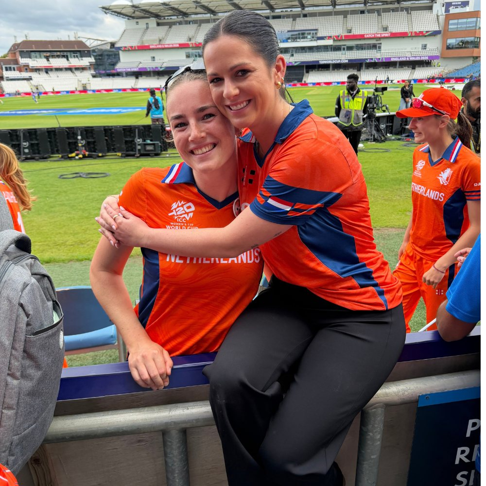
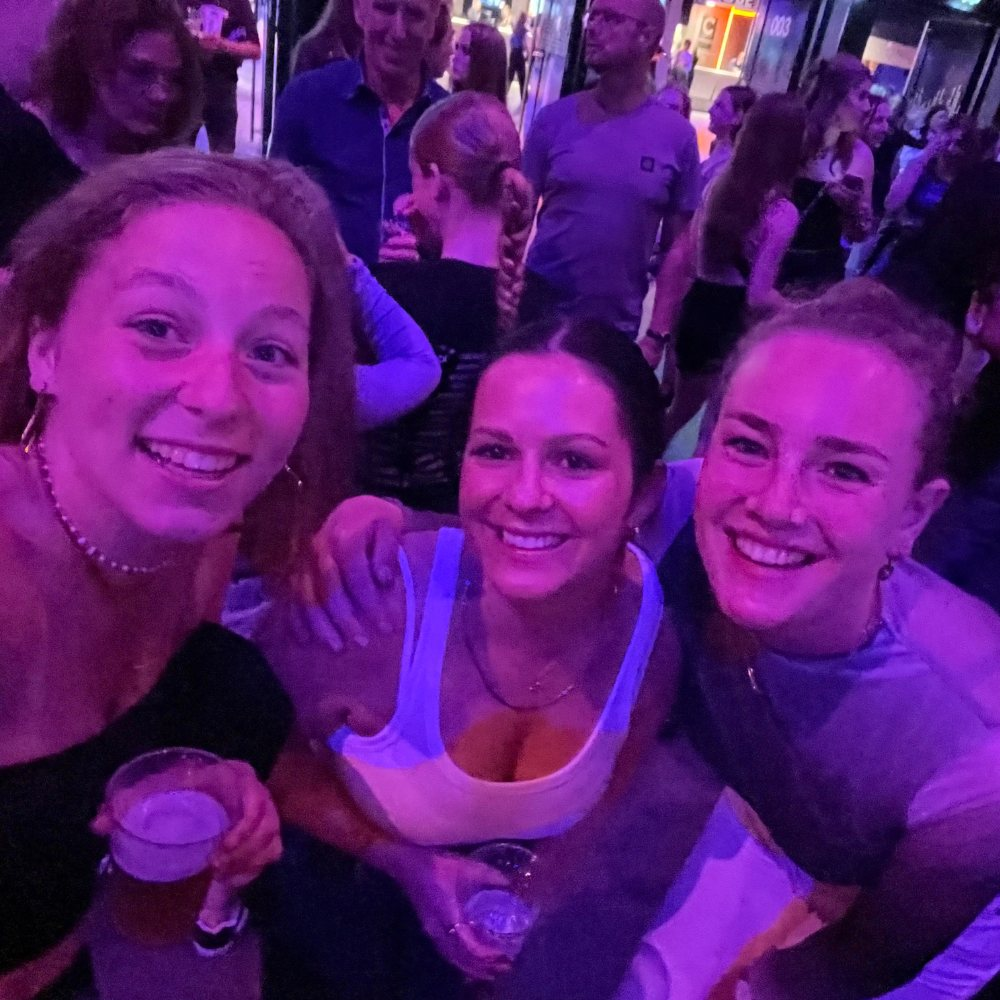
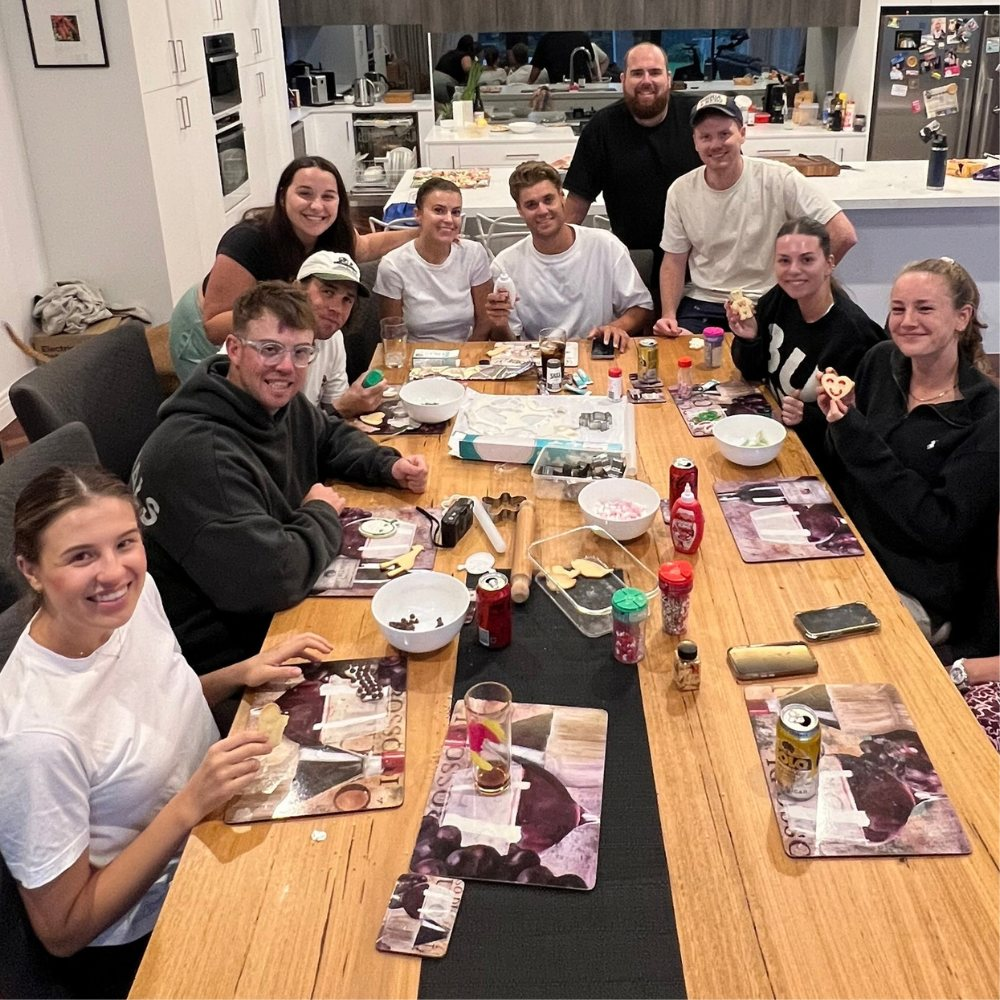
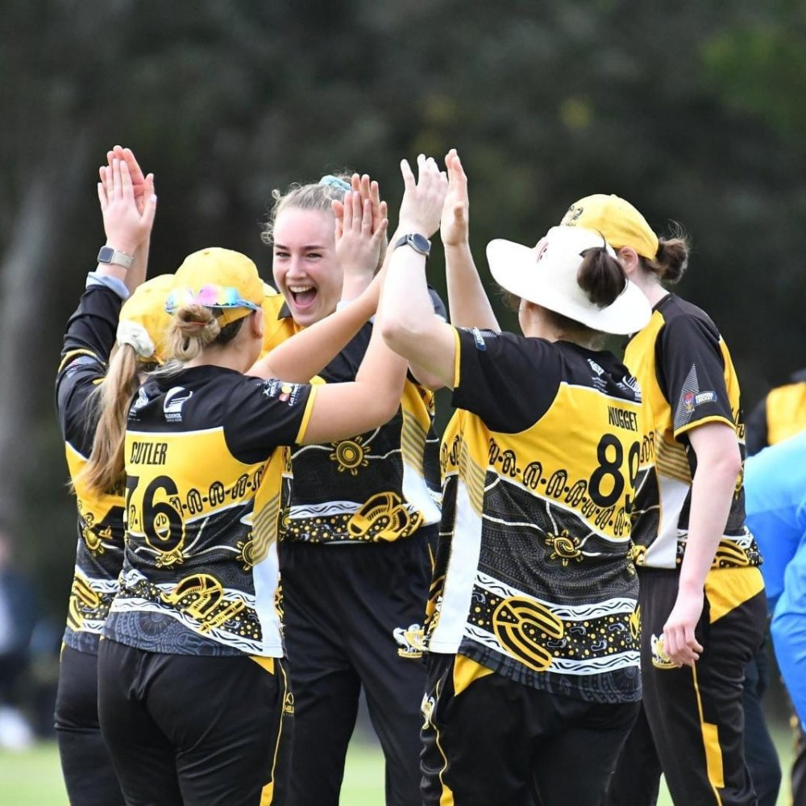
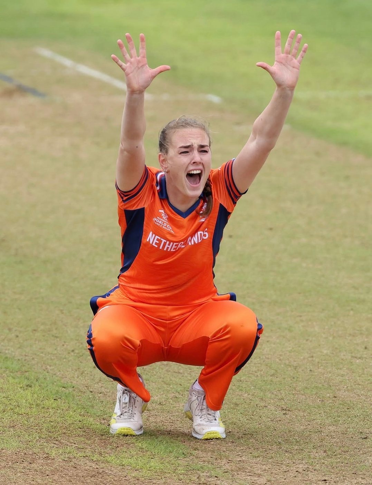
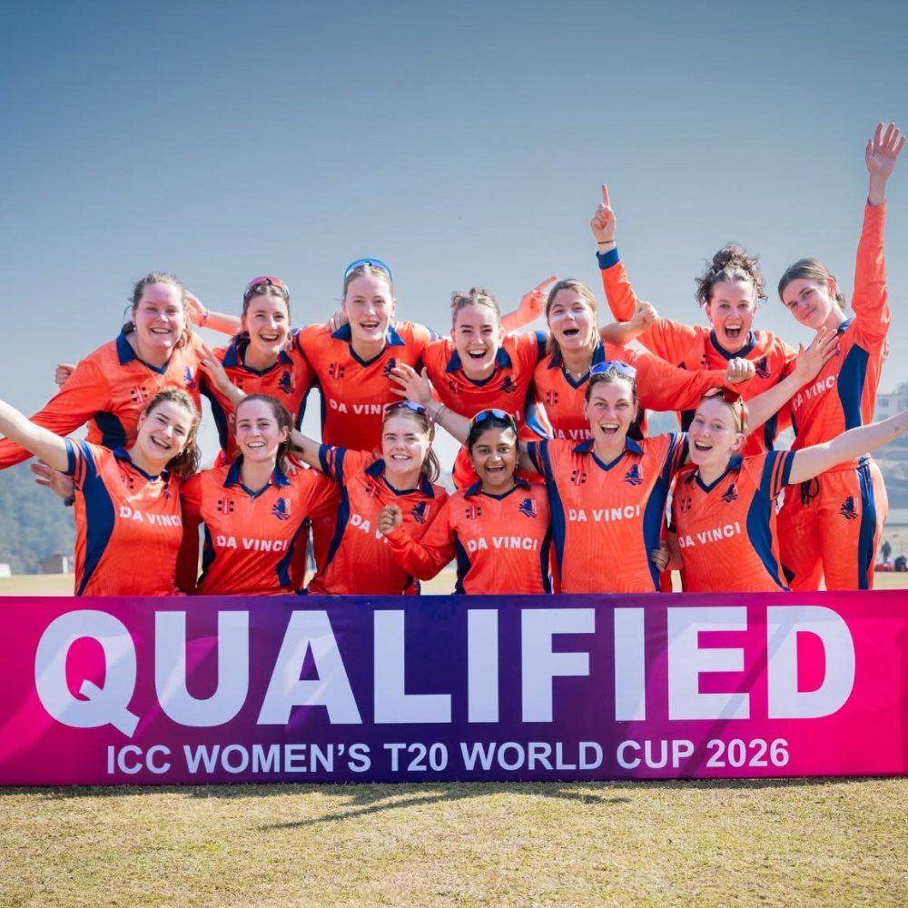
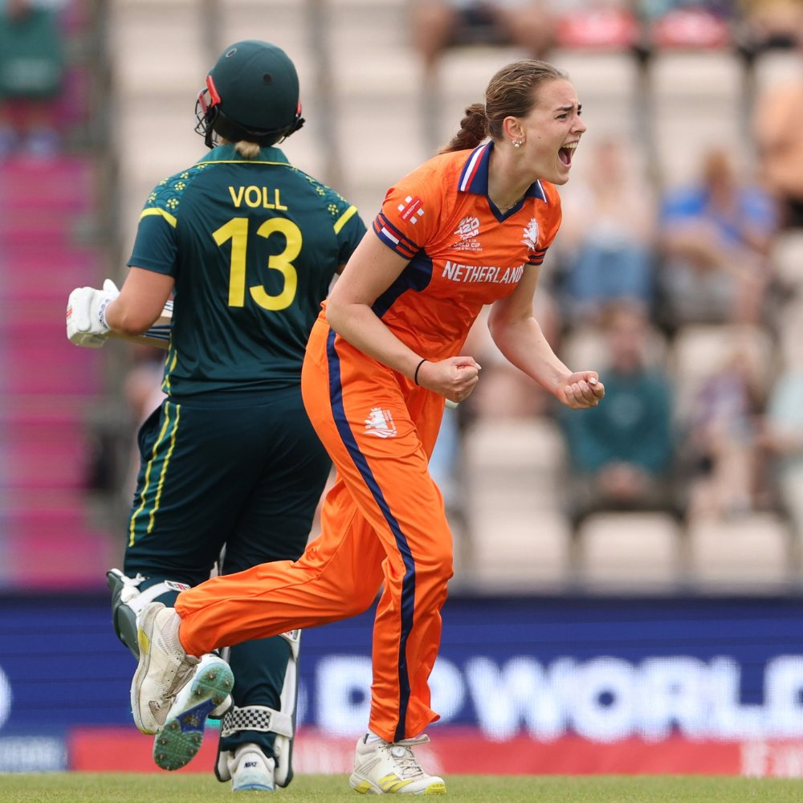

WRITTEN ABOUT & FOR ONE OF THE MOST INCREDIBLE WOMEN I KNOW.
AS FATE WOULD HAVE IT.
I'm a true believer in everything happening for a reason. And I don't mean that in the sense of being lucky; I mean it in the way that missing your bus, getting turned down for a job, finding the right person (or the wrong one) steers you in the direction you were meant to go. If it wasn't for the things that happen to us, good and bad, we wouldn't be where we are today.
It's this thinking that leads me to believe that everything had to fall into place, in exactly the right sequence, for Iris and I to meet.

Where it Started
MAY 2024

in Amsterdam.MAY 2024
My partner Conor is a cricketer. He's played domestically in South Australia and taken contracts overseas, which has shaped a lot of how we live. We follow the seasons, we build a life that has cricket running through the middle of it, and one of the things that comes with that life is the opportunity to spend time in places we'd never otherwise land, around people we'd never otherwise meet. In 2024, we decided to make the most of it and spend a summer abroad together.
Conor playing overseas meant our accommodation would be subsidised, so we'd have a base and could travel. England had always been the goal, the place we knew we wanted to go. Unfortunately, due to competition rules around the number of games a player could accumulate at a professional level, Conor wasn't eligible to play in England, so we started looking at other options. His agent found a club in the Netherlands, the Haagsche Cricket Club, known as 'HCC'. I remember thinking at the time: there's cricket in the Netherlands? Like an actual competition?
Conor headed over two weeks before I did while I finished up at work, and by the time I arrived he'd already settled in and met everyone at the club. He'd specifically mentioned one person he thought I'd get on with, she played for the women's team, her name was Iris. I flew into the Netherlands on a Monday, and spent my first few days getting to know my new home. A few days after I landed, Iris messaged Conor to ask if his girlfriend liked Olivia Rodrigo, and if she was free on Friday. She had a spare ticket to a show in Amsterdam and thought I might want to come. I'd just quit my job and moved to the other side of the world, so when Conor passed the message on, I didn't overthink it. I specifically remember saying to Conor, "Yeah Fuck It, Why Not".
The first time Iris and I met was at Den Haag Centraal train station, on our way to Amsterdam for the concert. What I remember most about that night is how quickly it felt like we'd known each other for years. We went with her friend Fleur, we talked the whole way there and back, and somewhere between the train and the music and the walk home, that was it, we were friends.
After three months in Den Haag we were attached at the hip, and by the end of the summer I was convincing her to come to Adelaide for the cricket season and join our family holiday to Bali. She came back again for her second season in 2025 and lived with me, and in June 2026 I travelled to England to watch her play in the World Cup. As I'm writing this, Iris is back in Adelaide, here for my brother's wedding, and then travelling with me to Vietnam to find my wedding dress.
This is what I mean when I say everything happens for a reason. If we'd gone to England and not Den Haag, if we'd chosen a different year to go, if I hadn't said yes to a concert with a stranger we wouldn't be here today.
After spending that time around Iris, her team, and women's professional sport, I wanted to share her story. I'd tell anyone who would listen "did you know this is the first time in history the Dutch women's team have ever qualified for a World Cup?" and "Iris is the first Dutch cricketer male or female to take 100 T20I wickets" These stats are wild, and they're not something to move past. The more Iris and I spoke about her experience, how it felt for the team and their families, and what it's really like for these women compared to those who get to do this full time because financially they can, the more I wanted to put it somewhere. They defied the odds. They go against the grain. They work hard because they love what they do.


Cricket In The Early Days
Iris grew up in Den Haag (known as The Hague in English), in the same house where her dad and uncle grew up which was right next door to HCC. Her dad and uncle had drifted over to the cricket side of the club out of curiosity one day and started playing (and never really stopped). Her brother Rik followed, then her sister Mikkie, and by the time Iris was old enough she just wanted to do what her siblings did.
Growing up, Iris never played cricket to become good at it or to go professional, she played because it was fun. It wasn't until other parents started asking why she and Mikkie weren't in the youth setups that the idea even entered the picture. They went to trials, made it into the system, and the rest unfolded from there. Her parents were happy as long as she was enjoying it, and when the time came to make bigger decisions like going abroad and putting her psychology career on hold, they supported her without question. Her dad has been her biggest fan from the start and still is, cheering her on at every game, and spending the entire World Cup in England so he wouldn't miss a moment. Iris' mum, who by her own admission isn't much of a sportswoman, has since become a devoted cricket fan in her own right.
Cricket in the Netherlands is almost invisible. It gets confused with croquet, with curling, with polo; and Iris has been asked more than once how she transports her horse when she travels overseas for matches. The sport that billions of people follow like a religion is, in the Netherlands, something most people have never actually seen played in real life. Unfortunately this lack of visibility comes with its challenges; underfunding, limited resources, minimal coaching, and very few opportunities for the game to grow.
To put that into perspective; there are roughly 150 women who play cricket in the Netherlands. In India, that number is closer to 60 million. The Netherlands qualified for the same World Cup.
Outside of her family, a couple of coaches along the way have had a lasting impact on the cricketer Iris is today. At HCC, when Iris was around thirteen or fourteen, two overseas coaches named Ryan Ninan and Jonathan Vandiar started taking her cricket seriously in a way that changed everything.
Ryan was, by Iris's own description, something of a magician with a cricket ball. He could bowl right handed, left handed, leg spin, off spin, in swing, out swing and he taught her the foundations of bowling that she still builds on today.
Jonathan worked with her on her batting, running the same drills over and over on Friday afternoons until the right habits stuck. He kept coming back to HCC season after season, and in 2024 he joined the coaching staff of the Dutch Women's team, a full circle moment that Iris says had a massive role in their qualification for the World Cup. Without them both, she'll tell you, she wouldn't be the cricketer she is today.
For years, women's cricket in the Netherlands paid nothing at all, which left players to fund their own tours and buy their own kit. While that had changed by the time Iris came through, there were still no contracts, no steady income, no real pathway to making cricket a full-time career.
Something that really stood out to me when I met Iris and her teammates was the commitment they had to their sport. Iris shares a similar story to many in her team; she recently completed her Master's in Forensic and Legal Psychology, fitting it in between waitressing and coaching jobs to keep herself afloat, all while playing cricket professionally for her country.
She wrote her Thesis in hotel rooms across the world and did study sessions with teammates in hotel lobbies between tours. When she was offered an internship at a Forensic Psychiatric Hospital, the kind of opportunity that gives a psychology career real momentum, she turned it down. She could work as a psychologist for the rest of her life, but cricket has a time limit. Iris wanted to give it a proper go, to never look back wondering what if, and honestly, that kind of decisiveness is something I've always admired about her.

Preparing for the Global Qualifiers
2025
The conditions they trained in to prepare for the Global Qualifier, say everything about the difference between cricket in the Netherlands and cricket in countries like Australia, England and India. The squad would cycle to indoor training nets in -5 degree temperatures, through the snow, with the nets themselves the same temperature as outside. When Iris told her Australian teammates that the Dutch national side were lucky to train on grass once a week, they were genuinely shocked. It had never occurred to them that it could be any other way.
With such a small pool of players in the Netherlands, there is only one women's cricket competition in the country. The week after the World Cup, Iris went back to her local club and found herself facing her friend's mum on the field, someone who had jumped in just so the team had enough players to compete. One week she is facing some of the best bowlers in the world, the next, her mate's mum. I don't think there's a better image for what these women navigate, and what makes what they've achieved so remarkable.
FEBRUARY 2026
Global Qualifiers 2026 | Nepal
A bug had been working its way through the squad for most of the Global Qualifier tournament, and by the time the USA match arrived Iris had caught it. She barely slept the night before, and that morning coach Neil McRae told her that all he needed from her was three overs in the powerplay, and after that she could rest.
Iris bowled 4 overs in the first innings, with rain stopping play midway through the second. The DLS had the Netherlands ahead, and if the game was called they were going to the World Cup. She watched from where she was sitting as the umpires called the captains over. When Babette de Leede walked back toward the team with a smile on her face, nodding, the cheers started before anyone needed to say a word.
"For the minutes to follow I couldn't feel ill anymore," Iris told me. "I could only feel relief and excitement."
They celebrated in the pouring rain, sliding on the soaking wet covers with their families and coaching staff all there. I think that image, everyone completely drenched, completely elated, in true Dutch fashion, is the one I keep coming back to when I think about what this team is made of.

Before Nepal, and before the World Cup, there was another milestone worth stopping on. Iris became the first Dutch cricketer, male or female, to take 100 T20 international wickets. For someone who has had to fight for every opportunity, it felt like exactly the kind of record she deserved to hold.
T20 World Cup 2026 | England & Wales.
JUNE 2026
It had been two years since I'd said yes to a concert with a stranger, and here we were again, everything happening exactly as it was meant to. Conor and I had already booked a trip to Europe for June 2026; our good friends were getting married in Italy and we were in the wedding party. And as it turned out, the exact week we'd planned to be in London, the World Cup was on.
We booked a few nights in Leeds so we could watch the Netherlands take on India at Headingley, and I'd made Iris badges for anyone who would wear one - family, friends, strangers if they'd have them. We laughed when I ordered 50, wondering what on earth we'd do with them all, but I'm happy to say we didn't go home with a single one.
I still get emotional thinking about walking into that stadium, watching the team walk out onto the ground for the first time, seeing them stand together and sing the anthem. It felt completely surreal, but also like it was meant to be.
A few days later came the Australia match in Southampton, and Conor and I were supposed to be on a flight to Montenegro that morning. I'd been going back and forth on whether to change our flights and stay, or save the hassle and stick to our plans. In true Georgie last-minute fashion, I changed our flight ten hours before departure, caught the 7am train down to Southampton, and sat next to Iris's mum in the stands, which was also, somehow, the first time we'd ever met. Iris took three wickets against one of the best sides in the world, and her mum and I burst into tears. When I saw Iris after the game, signing autographs and taking pictures, I knew I wasn't going to be able to keep it together. I gave her the biggest hug, I was so immensely proud of my friend.
Her dad, who played at HCC for years before only recently retiring, was there too, along with her brother and sister. In their first game against Bangladesh, Iris had walked out to bat and heard her sister's voice cutting through the crowd, and she told me she heard her in every single game that followed. Against Pakistan in Bristol, their last match of the tournament, Iris bowled a wicket maiden, looked up into the stands, found her sister, and celebrated with her from twenty-two yards away.
stats that make me smile.
- 107 wickets across 98 T20 internationals
- 27 ODI wickets at an average of 14.92
- A five-wicket haul against Thailand
- Two international half-centuries scored back-to-back
- A Master's degree in Forensic and Legal Psychology
- Three seasons of club cricket in Australia
- One World Cup
- A place in Dutch cricket history that no one before her, male or female, had ever reached.
